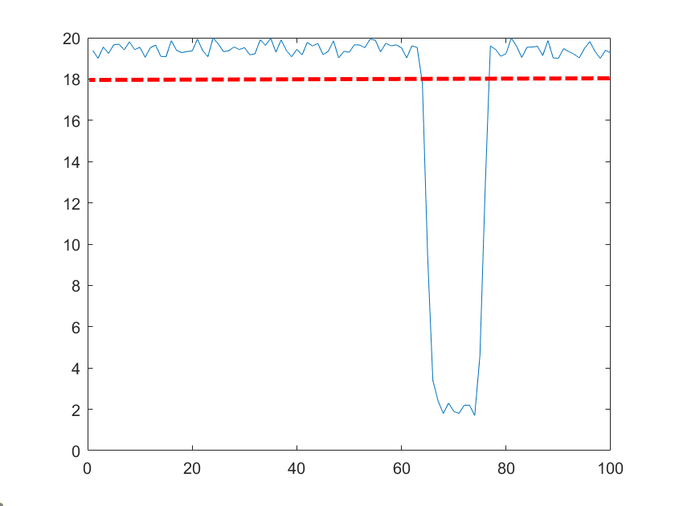

Mechatronics One
The Project Goal:
This project is referred to as Mechatronics One as during my 2 years on the Integrated Design Engineering course I completed two projects that had a focus on Mechatronics.
For this group project members of the group chose to specialise in either Mechanics, Electronics or Software. As I was looking to develop my software and programming skills, this was the option I chose. The goal for the project was to program a gantry and motors, using an Arduino, to detect treasure (magnets) and place a plastic up above them to mark their positions. This was done using Hall-Effect sensors which output a varying voltage based on the magnetic fields nearby.
The Method:
The first step for the software role was to gain control of the gantry and it's motors. This was done by connecting the gantry up to specific pins on the Arduino and combining simple writePin commands with a piece of code that configured the Arduino to be used as a pullup resistor for the DC motors of the gantry.
After gaining control of the gantry, while the Electronics role was working on cleaning the signal from the Hall-Effect sensors, I worked on scanning the position of cups as these needed to be picked up by our contraption at the beginning of the task. This was completed using a ultrasonic sensor where, as the gantry swept the area, a program detected a change in distance (seen below) and then found the centre point of this deviation. Our contraption would then lower and use a gear to pick up the cups.
Once the cup program had been completed the Electronics behind the Hall-Effect sensors were functional so it was possible to begin programming with them. This process was done similarly to the scanning for the cups except the Hall-Effect sensors were being used rather than the Ultrasound. Due to there being multiple magnets within the work area however there was a need to 'upgrade' this code. Some of the changes made were to ignore a magnet if it was too close to one that had already been scanned (Picking up the same magnet twice) and removing a magnet from the chart to allow a second to be found within the same scanning pass shown below.
When the magnet scanning program had been perfected and all of the magnets were being located, an efficient route between them needed to be calculated. The method for calculating this route was loosely based upon Dijkstra's algorithm for route plotting. While it is based upon Dijkstra's algorithm all of the calculations are done simultaneously rapidly increasing the speed of this process. While this program worked out very efficiently and accurately the fasted route between the magnets as the crow flies, the gantry could only move in either the X or Y direction at any time shown below. Therefore, one potential improvement or something to look into would be to find if the route calculated is still the quickest given the different path the gantry takes.